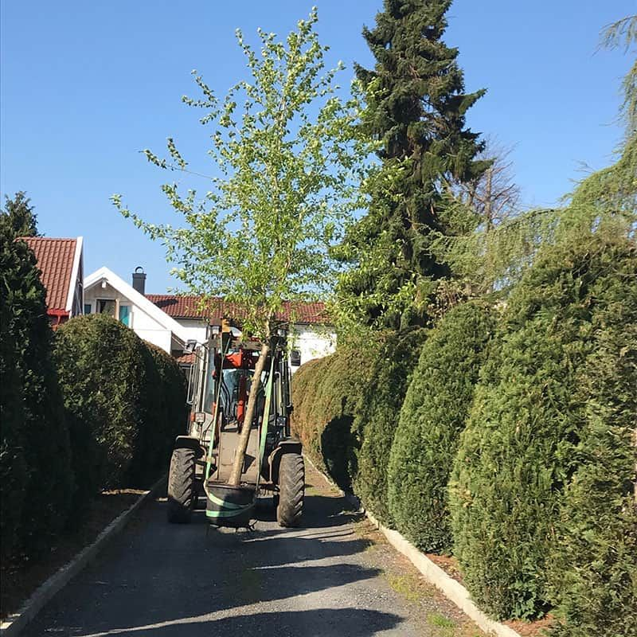
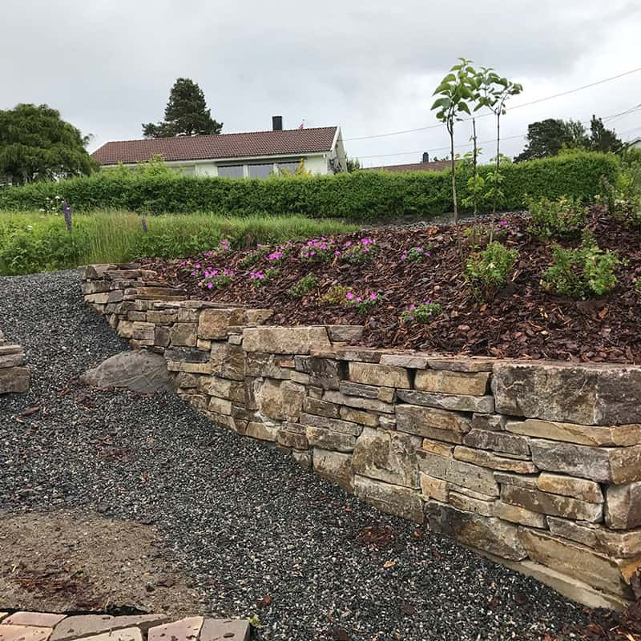

Hagesenter, egen planteskole, anleggsgartner og vintervedlikehold – alt på ett sted på Bergemoen.
Siden 1965 har Ødegårdens Planteskole og Utemiljø drevet med produksjon og viderekultivering av planter. Vintergrønne planter kultiveres på planteskolen på Bergemoen, og vi har utvidet kapasiteten ved å kultivere trær i Tovdal.
Planter som er vokst opp i norsk klima og under norske forhold er mer levedyktige enn importerte planter. Ødegårdens Planteskole har vært Gasellebedrift tre år på rad.

Fra eget anlegg ved innkjøringen til hagesenteret. Vi hjelper deg gjerne med å lesse, eventuelt kan vi levere. Egen kortterminal og Vipps.

Bilder merket «KI-generert førbilde» er laget med kunstig intelligens for å illustrere hvordan stedet kan ha sett ut før. Etterbildene er ekte prosjektbilder.
Last opp et bilde av eiendommen, velg tiltak og se hvordan det kan bli.
Eller se et eksempel fra våre jobber:
Spør om åpningstider, planter, bark og matjord, brøyting eller anleggsarbeid. Sekretæren stiller de riktige spørsmålene (mål, bilder, adresse og tidsrom) og lager en ferdig e-post til oss.
KI er klargjort, men ikke aktivert i demoen. Svarene kommer nå fra en regelbasert assistent.
Dagens nettside oppgir ingen priser (sjekket 20.10.2026). Prisene under er EKSEMPEL-plassholdere til bedriften fyller inn.
| Tjeneste | Enhet | Fra-pris |
|---|
Åpningstider utenfor sesong og helligdager: se Facebook-siden vår.
📞 37 04 31 02 eller 908 60 707
✉️ post@odegardens.no
📍 Bergeveien 8, 4886 Grimstad
Veibeskrivelse: Ta av fra E-18, kjør mot Vesterled, ta av til Bergemoen og kjør inn til venstre i Bergeveien.